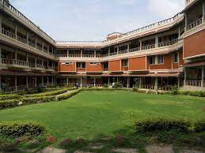
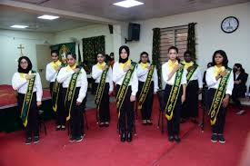

Campus
The campus at BCWCC is filled with beatiful greenery, flowers at full bloom, big building equipped with multiple labs for every subject for the degree and puc classes. the campus has benches spread out for students, an open stage, bird cages and a well stocked library too.
Student Council
The student body elects a group of leaders to represent them through the academic year and. The council consists of 8 positions and thye are elected through a well conducted election process using ecm machines. the election season starts off with campaigns and after the results are announced a grand investitures ceremony takes place. The council hosts and organize multiple cultural and literally events.